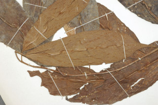
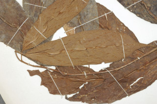

Trees up to 8 m tall.
8 ಮೀ.ವರೆಗೆ ಬೆಳೆಯುವ ಮರಗಳು.
8 മീറ്റര് വരെ ഉയരമുളള മരങ്ങള്.
மரங்கள் 8 மீ. உயரம் வரை வளரக்கூடியது.
Branchlets terete, pubescent.
ಕಿರುಕೊಂಬೆಗಳು ದುಂಡಾಗಿದ್ದು ಮೃದುತುಪ್ಪಳ ಸಮೇತವಾಗಿರುತ್ತವೆ.
ലഘുരോമിലമായ, ഉരുണ്ട ഉപശാഖകള്.
சிறிய நுனிக்கிளைகள் குறுக்குவெட்டுத் தோற்றத்தில் வளையமானது, உரோமங்களுடையது.
Leaves simple, alternate, spiral; petiole up to 1.5 cm long, tomentose; lamina 15 x 5.5 cm, oblong, apex caudate, base rounded to subacute, tomentose along midrib beneath; midrib raised above; secondary_nerves 7-9 pairs, looped; tertiary_nerves broadly reticulate.
ಎಲೆಗಳು ಸರಳವಾಗಿದ್ದು,ಪರ್ಯಾಯ ಮತ್ತು ಸುತ್ತು ಜೋಡನಾ ಮಾದರಿಯಲ್ಲಿರುತ್ತವೆ. ತೊಟ್ಟುಗಳು 1.5 ಸೆಂ.ಮೀ. ವರೆಗಿನ ಉದ್ದವಿದ್ದು ದಟ್ಟ- ಮೃದು ತುಪ್ಪಳವನ್ನು ಹೊಂದಿರುತ್ತವೆ;ಪತ್ರಗಳು 15 X 5.5 ಸೆಂ. ಮೀ. ಗಾತ್ರ, ಚತುರಸ್ರ ಮಾದರಿಯ ಆಕಾರದಲ್ಲಿದ್ದು, ಬಾಲರೂಪಿ ತುದಿ , ದುಂಡಾದ ಅಥವಾ ಉಪ- ಚೂಪಾದ ಬುಡ ಹೊಂದಿರುತ್ತವೆ; ತಳಭಾಗದಲ್ಲಿನ ಮಧ್ಯ ನಾಳ ದಟ್ಟ ಮೃದು ತುಪ್ಪಳದಿಂದ ಕೂಡಿರುತ್ತದೆ; ಮಧ್ಯನಾಳ ಪತ್ರದ ಮೇಲ್ಭಾಗದಲ್ಲಿ ಉಬ್ಬಿರುತ್ತದೆ; ಎರಡನೇ ದರ್ಜೆಯ ನಾಳಗಳು 7 - 9 ಜೋಡಿಗಳಿದ್ದು ಕುಣಿಕೆಗೊಂಡಿರುತ್ತವೆ; ಮೂರನೇ ದರ್ಜೆಯ ನಾಳಗಳು ವಿಶಾಲ ಜಾಲಬಂಧ ನಾಳ ವಿನ್ಯಾಸದವು.
ലഘുവായ ഇലകള് ഏകാന്തരക്രമത്തില്, സര്പ്പിളമായി അടുക്കിയിരിക്കുന്നു; കനത്ത രോമാവൃതമായ ഇലഞെട്ടിന് 1.5 സെ.മീ വരെ നീളം; പത്രഫലകത്തിന് 15 സെ.മീ നീളവും 5. സെ.മീ വീതിയും, ആയതാകാരവുമാണ്, പത്രാഗ്രം വാലുളളതാണ്, പത്രാധാരം വൃത്താകാരംതൊട്ട് ഉപനിശിതാഗ്രം വരെയാണ്. കീഴ്ഭാഗത്ത് ഉയര്ന്നു നില്ക്കുന്ന മുഖ്യസിര കനത്ത രോമാവൃതമാണ്; വളയം തീര്ക്കുന്ന 7 മുതല് 9 വരെ ജോഡി ദ്വിതീയ ഞരമ്പുകള്; വീതിയേറിയ ജാലിതമായ ത്രിതീയ ഞരമ്പുകള്.
இலைகள் தனித்தவை, மாற்றுஅடுக்கமானவை, சுழல் போன்று அமைந்தவை; இலை அலகு 15 X 5.5 செ.மீ., குறுகிய நீள்சதுர வடிவம், அலகின் நுனி வால் போன்றது, அலகின் தளம் வட்டமானது முதல் கூரியது போன்றது, அலகின் கீழ்புறத்தில் மையநரம்பு உரோமங்களுடையது, மையநரம்பு மேற்புறத்தில் அலகின் மேற்பரப்பைவிட மேல் எழும்பியது; இரண்டாம் நிலை நரம்புகள் 7-9 ஜோடிகளுடையது, விளிம்பில் இணைந்தவை; மூன்றாம் நிலை நரம்புகள் சிறிது அகன்ற வலைப்பின்னல் போன்றது.
Inflorescence axillary; flowers unisexual, dioecious; male flowers in axillary catkins, up to 1.5 cm long; female in short few flowered cymes.
ಪುಷ್ಪಮಂಜರಿಗಳು ಅಕ್ಷಾಕಂಕುಳಿನಲ್ಲಿರುತ್ತವೆ;ಹೂಗಳು ಏಕಲಿಂಗಿಗಳಾಗಿದ್ದು ಗಂಡು ಮತ್ತು ಹೆಣ್ಣು ಹೂಗಳು ಪ್ರತ್ಯೇಕ ಸಸ್ಯಗಳಲ್ಲಿರುತ್ತವೆ; ಗಂಡು ಹೂಗಳು 1.5 ಸೆಂ.ಮೀ. ವರೆಗಿನ ಉದ್ದದ ಪುಷ್ಪದಳರಹಿತ ಏಕಲಿಂಗಿ ಹೂಗಳುಳ್ಳ ಕದಿರುಮಂಜರಿಗಳಲ್ಲಿರುತ್ತವೆ; ಹೆಣ್ಣು ಹೂಗಳು ಕಿರಿದಾದ ಕೆಲವೇ ಹೂಗಳುಳ್ಳ ಮಧ್ಯಾರಂಭಿ ಮಂಜರಿಯಲ್ಲಿರುತ್ತವೆ.
പൂങ്കുലകള് കക്ഷ്യങ്ങളിലുണ്ടാകുന്നു; പൂക്കള് ഏകലിംഗികളാണ്, ഡയീഷ്യസും; ആണ്പൂക്കള് 1.5 സെ.മീ വരെ നീളമുളള കക്ഷീയ കാറ്റ്കിനുകളില് ഉണ്ടാകുന്നു; പെണ്പൂക്കള് ഏതാനും എണ്ണംമാത്രമുളള കുറിയ സെമുകളിലുണ്ടാകുന്നു.
மஞ்சரி தண்டின் இலைக்கோணங்களில் அமைந்தவை; மலர்கள் ஓர்பாலானவை, ஈரகம் கொண்டவை; ஆண்மலர்கள் இலைக்கோணங்களில் காணப்படும் கேட்கின், 1.5 செ.மீ. வரை நீளமானது; பெண்மலர்கள் குட்டையான குறைந்தளவு மலர்களுடைய சைம்.
Capsule 2 cm long, ovoid, beaked, softly echinate, tomentose; stigma persistent with 6 subulate lobes.
ಸಂಪುಟ ಫಲಗಳು 2 ಸೆಂ.ಮೀ ಉದ್ದವಿದ್ದು, ಅಂಡಾಕಾರ ಹೊಂದಿದ್ದು ಅಗ್ರದಲ್ಲಿ ಕೊಕ್ಕನ್ನು ಹೊಂದಿರುತ್ತವೆ ಹಾಗೂ ಮೃದುವಾದ,ಗಡುಸಾದ ತರಕಲು ಗುಬುಟುಗಳನ್ನು ಹೊಂದಿರುತ್ತವೆ ಮತ್ತು ದಟ್ಟ ಮೃದುತುಪ್ಪಳ ಸಮೇತವಿರುತ್ತವೆ; ಶಲಾಕಾಗ್ರ ಶಾಶ್ವತವಾಗಿದ್ದು 6 ದಬ್ಬಳದಾಕಾರದ ಹಾಲೆಗಳನ್ನೊಳಗೊಂಡಿರುತ್ತದೆ.
കായ കനത്ത രോമാവൃതമായതും, മൃദുമുള്ളുകള് നിറഞ്ഞതുമായ, കൊക്കോടുകൂടിയ, 2 സെ.മീ നീളമുളള അണ്ഡാകാര കാപ്സ്യൂള് ആണ്; 6 സൂചിപോലുള്ള ഭാഗങ്ങളുളള ഉറച്ചു നില്ക്കുന്ന വര്ത്തിക.
வெடிகனி (கேப்சூல்), 2 செ.மீ. நீளமானது, முட்டை வடிவானது, அலகுடையது, மெண்மையான முட்களுடையது (எக்கினேட்), உரோமங்களுடையது; சூலகமுடிச்சு நிரந்தரமானது, 6-பிளவுகளுடையது.
 
